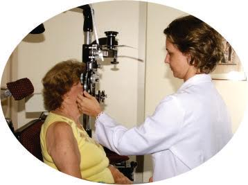

Há algum tempo escutei uma entrevista que ouvi pelo rádio alertando contra a negligência de número expressivo de cidadãos, quanto à possibilidade de ocorrência de doenças oculares. O oftalmologista, o qual não me lembro o nome, citou o glaucoma e a catarata como exemplos, justificando a imperiosa necessidade de se proceder, quanto antes, exames médicos capazes de diagnosticar problemas e indicar tratamentos. “Quanto antes”, na linguagem do médico, foi mencionado com a adição de uma lembrança de Maquiavel.
Nicolau Bernardo Maquiavel (1469-1527) foi um filósofo, diplomata e músico de Florença, Itália, notabilizou-se pela forma como um de seus pensamentos passou à história: “Os fins justificam os meios”. Suas obras, com destaque para “O Príncipe” (1513), lhe conferiram o renome de fundador da ciência política moderna. Entre suas máximas filosóficas, está o conselho de que se deve cortar o mal pela raiz. Foi este pensamento que o oftalmologista entrevistado lembrou, parafraseando Maquiavel: problemas de visão, como praticamente todos os males, são difíceis de diagnosticar e fáceis de curar, quando no início; porém, quando em estágios avançados, são fáceis de diagnosticar, e difíceis de curar.
O conselho adequado para hoje é o mesmo de outrora: adquiras o colírio, para ungir os olhos, para enxergar… E, sem esquecer-se do lembrete de Maquiavel (quer dizer, do oftalmologista): quanto mais cedo, melhor, porque mais eficaz será o tratamento. Se deixar para mais tarde, pode complicar muito mais.

É considerada idosa a pessoa com mais de 60/65 anos de idade. Estima-se que a população com mais de 60 anos deva triplicar até 2050 e a maior causa das doenças oculares é o envelhecimento. Por isso, a importância do Dia Internacional do Idoso, criado pela Organização Mundial da Saúde (OMS) em 1991, com o objetivo de sensibilizar a sociedade para as questões do envelhecimento.
No Brasil, com a aprovação do Estatuto do Idoso, em 2003, começou a incorporação de resoluções de organizações internacionais, como a ONU e a OMS, à jurisprudência nacional. Com a aprovação do Estatuto, o Brasil também adotou o dia 1º de outubro como Dia do Idoso, antes celebrado em 27 de setembro.
Em 2016, o Dia Internacional do Idoso ou das Pessoas Idosas teve por tema: "Tome uma posição contra o envelhecimento".
- E a melhor posição contra o envelhecimento, afirma João Alberto Holanda de Freitas, presidente da Sociedade Brasileira de Oftalmologia, é o cuidado com a saúde que, no caso dos olhos, começa aos 40 anos.
João Alberto Holanda de Freitas lembra que quase 80% da relação do indivíduo com o mundo se dá através da visão, ressaltando que pessoas saudáveis devem fazer exames oftalmológicos anuais a partir dos 40 anos de idade. Quem tem histórico familiar de alguma doença ocular deve começar mais cedo, afirma o presidente da Sociedade Brasileira de Oftalmologia.
O exame oftalmológico anual, sempre feito por um médico oftalmologista, permite detectar e prevenir as principais doenças oculares da 3ª idade, tais como:
A Catarata, doença que embaça o cristalino, dificultando a visão e causando cegueira quando não tratada. É a única cuja cegueira é reversível. Ela é responsável por 48% dos casos de cegueira no Brasil e não se tem como evitá-la, mas é tratável através de cirurgia. Além da estimativa, a última pesquisa nacional de saúde mostra que dos brasileiros com mais de 60 anos só 28% afirmaram ter catarata. A partir dos 60 anos o risco de catarata aumenta, sendo que ela afeta cerca de 17% das pessoas até 65 anos e 47% dos que têm de 65 a 74 anos. Ressalta-se que a Catarata atualmente afete até pessoas com menos de 65 anos, devido ao estilo de vida moderno (sol em excesso, alimentação, estresse, etc.).
A Degeneração Macular Relacionada à Idade, que afeta a área central da retina (mácula) como já diz o nome, ocorre por conta da idade. Ela já afeta cerca de 2,9 milhões de brasileiros acima de 65 anos de idade e pode levar à perda parcial ou total da visão. Já é comum em pessoas com mais de 50 anos e chega a atingir, em todas as suas formas, mais de 30% dos pacientes acima de 80 anos. A falta de tratamento adequado pode levar à cegueira irreversível.
O Glaucoma, a primeira causa de cegueira irreversível no mundo. Estima-se que no Brasil existam cerca de 985 mil pessoas portadoras de glaucoma, embora o número deva ser bem mais elevado, uma vez que calcula-se que 50% dos portadores ignoram ser portadores da doença. Caso sejam aceitos os índices da World Glaucoma Association, segundo a qual a doença afeta entre 1% e 2% da população geral, chegando a 6% e 7% após os 70 anos, o Brasil pode ter quase 4 milhões de glaucomatosos.
A Retinopatia Diabética, uma complicação provocada pelo diabetes, resultando em danos aos vasos sanguíneos da retina. Estima-se que 7% da população brasileira tem diabetes, há cerca de 14 milhões de diabéticos no país. No Brasil, 40% dos diabéticos possuem retinopatia, portanto são 5,6 milhões de diabéticos com retinopatia diabética.
- No entanto, apesar desses dados, afirma João Alberto Holanda de Freitas, a boa notícia é que a maioria dessas doenças tem prevenção e tratamento, inclusive com modernos recursos cirúrgicos, Através do exame do fundo de olho, obrigatório em qualquer exame oftalmológico, pode-se detectar precocemente não só as doenças acima citadas, mas também outras, ressalta o presidente da Sociedade Brasileira de Oftalmologia.